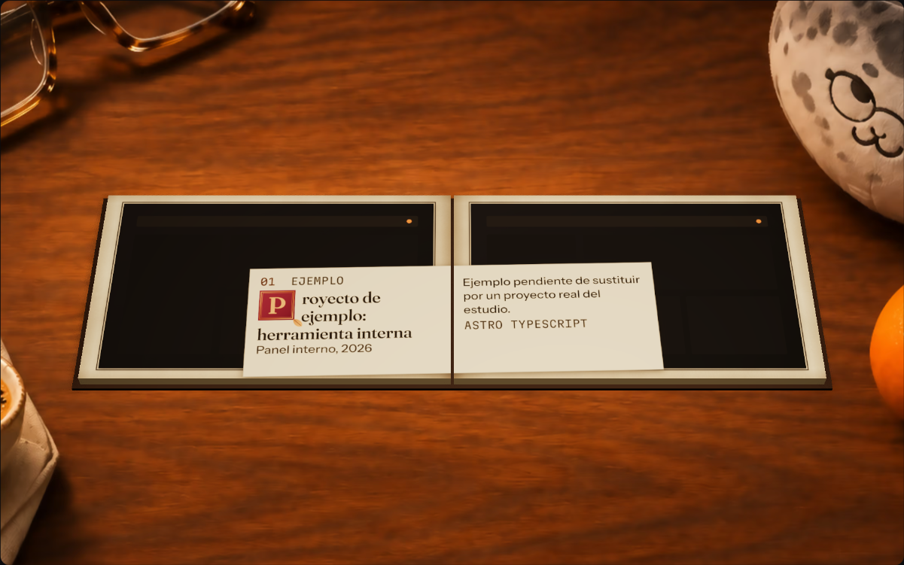
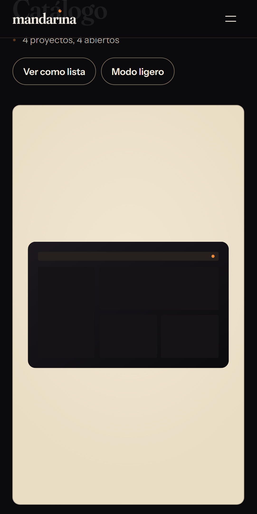
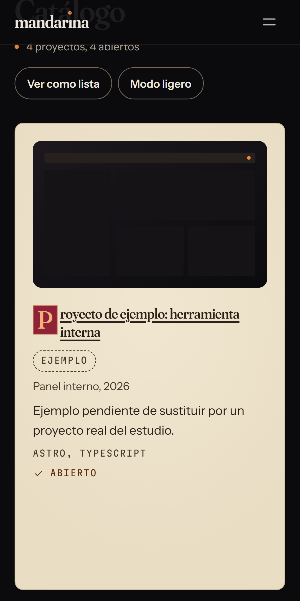

Pliegos de proyecto
Cada proyecto abierto ocupa un pliego: su primera pantalla a la izquierda, su clip a la derecha (aquí los ejemplos aún no tienen imagen real) y la ficha cruzando el pliegue. El clip se recorta alrededor de la ficha, así que se lee también mientras suena el vídeo. Para que el texto no baje de 12 px con la cámara inclinada, la ficha es más grande de lo que imaginábamos; el título se ajusta entero, sin puntos suspensivos. Los títulos reales (dos o tres palabras) la harán más baja. Volver.
El libro



El teléfono, 412 × 823: dos tarjetas por proyecto



